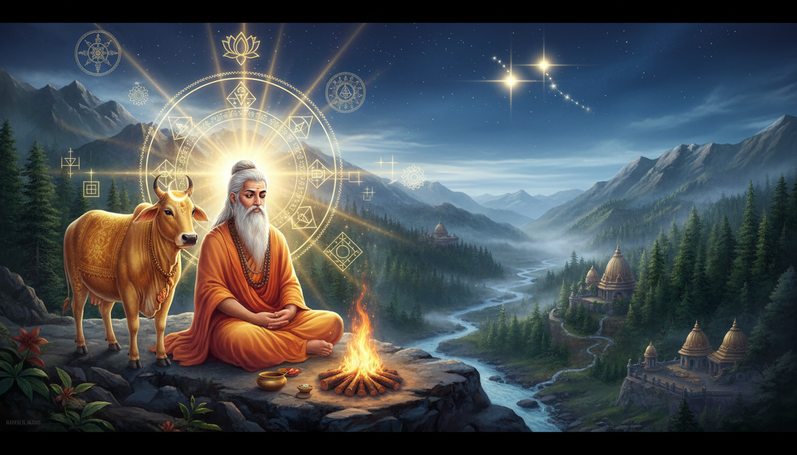

1. प्रस्तावना: क्या वह सब सच है जो हम देखते हैं?
क्या यह दृश्यमान संसार वास्तव में वैसा ही है जैसा हमारी इंद्रियां हमें अनुभव कराती हैं, या यह मात्र एक 'विवर्त' (illusory projection) है? वास्तविकता की प्रकृति को समझना मानव चेतना के लिए सदैव एक महान चुनौती रही है। प्राचीन भारत के ऋषियों ने जहाँ अजात-वाद जैसे 'परमार्थ' (absolute truth) दर्शन के माध्यम से चेतना के अद्वैत स्वरूप को पहचाना, वहीं डॉ. वाई. वी. सुब्बा राव जैसे आधुनिक शोधकर्ताओं ने खगोल विज्ञान के 'जीवन पक्ष' (Life side of Astronomy) यानी ज्योतिष के माध्यम से ब्रह्मांडीय ऊर्जा के भौतिक प्रभावों को वैज्ञानिक आधार प्रदान किया है। यह लेख चेतना के उस उच्चतम शिखर और वैज्ञानिक धरातल के संगम की खोज है, जो हमें यह सोचने पर विवश करता है कि क्या वास्तव में कुछ घटित हो रहा है।

2. अजात-वाद: सृजन का परम सत्य
अध्यात्म का परम सत्य 'अजात-वाद' में निहित है। 'अजात' का अर्थ है—वह जो कभी उत्पन्न ही न हुआ हो। गौड़पाद के मांडूक्य उपनिषद कारिका (2:32) का श्लोक इस सत्य को प्रमाणित करता है:
"न निरोधो न चोत्पत्तिर्न बद्धो न च साधकः। न मुमुक्षुर्न वै मुक्त इत्येषा परमार्थता॥"
भावार्थ: न कोई विनाश है, न कोई उत्पत्ति; न कोई बंधन में है, न कोई साधक है; न कोई मुमुक्षु है और न ही कोई मुक्त है। यही एकमात्र परम सत्य है।
भगवान रमण महर्षि के अनुसार, यह 'आत्मन' का अनुभव है जहाँ केवल एक ही वास्तविकता का अस्तित्व है। पापजी (Papaji) ने इस पर गहरा तर्क दिया है: सृजन (Creation) का अर्थ है 'इच्छा' (Desire), और इच्छा का अर्थ है 'अपूर्णता' (Incompleteness)। चूंकि 'स्व' या आत्मा स्वयं में पूर्ण (Purna) है, इसलिए उसमें कोई इच्छा नहीं हो सकती। यदि कोई इच्छा नहीं है, तो सृष्टि का निर्माण कभी हुआ ही नहीं। जिसे हम कारण और प्रभाव (Cause and Effect) कहते हैं, वह 'योग वशिष्ठ' के 'काक-तालीय न्याय' (Crow and Coconut Analogy) की तरह है—जैसे ताड़ के वृक्ष पर कौआ बैठा और अचानक नारियल गिर गया; कौआ गिरने का कारण नहीं था, पर वह भ्रम पैदा हो गया। वास्तव में, सृष्टि कभी घटित ही नहीं हुई।
3. सत्य के तीन स्तर: साधक की क्षमता के अनुसार शिक्षण
रमण महर्षि ने स्पष्ट किया कि यद्यपि सत्य एक है, परंतु मन की सीमाओं के कारण इसे तीन स्तरों पर समझाना पड़ता है, क्योंकि मन यह स्वीकार नहीं कर पाता कि भूगोल, विज्ञान और ग्रह पूरी तरह 'असत्य' हैं:
- अजात-वाद (Ajata-vada): उच्चतम स्तर, जहाँ केवल एकमात्र वास्तविकता (Self) का अस्तित्व है। यहाँ कोई सृष्टि नहीं है।
- दृष्टि-सृष्टि वाद (Drishti-srishti vada): मध्यम स्तर, जहाँ 'देखने वाला' (Seer) ही अपने मन से 'दृश्य' (Seen) का निर्माण करता है। जैसे स्वप्न में मन ही जगत रचता है, वैसे ही यह जाग्रत अवस्था भी मन का ही प्रक्षेपण है।
- सृष्टि-दृष्टि वाद (Srishti-drishti vada): प्रारंभिक स्तर, जहाँ यह माना जाता है कि ईश्वर ने सृष्टि की रचना की और जीव उसे देख रहा है। यह उन लोगों के लिए है जो मन के तर्क और भौतिक जगत के नियमों (विज्ञान, मानचित्र, ग्रहों की गति) को सत्य मानते हैं।
4. ज्योतिष: खगोल विज्ञान का 'जीवन पक्ष'
डॉ. वाई. वी. सुब्बा राव के शोध के अनुसार, ज्योतिष केवल अंधविश्वास नहीं, बल्कि खगोल विज्ञान और प्रकाशिकी (Optics) का एक उन्नत विज्ञान है। ज्योतिष का आधार 'विद्युत-चुंबकीय विकिरण' (Electromagnetism) है।
इसमें पृथ्वी को एक 'ग्रह' नहीं, बल्कि एक 'गतिशील वेधशाला' (Moving Observatory) माना गया है, क्योंकि प्रेक्षक (Observer) और प्रेक्षित ग्रह एक साथ नहीं हो सकते। अन्य ग्रह सूर्य के प्रकाश को पृथ्वी तक दो माध्यमों से पहुँचाते हैं:
- परावर्तन (Reflection): आंतरिक ग्रह (बुध, शुक्र) और चंद्रमा सूर्य के प्रकाश को सीधे पृथ्वी पर परावर्तित करते हैं।
- विक्षेपण (Deflection): आइंस्टीन के 'प्रकाश के विक्षेपण' के सिद्धांत के अनुसार, बाहरी ग्रह (मंगल, बृहस्पति, शनि) ब्रह्मांडीय प्रकाश की किरणों को मोड़कर या विचलित करके पृथ्वी तक पहुँचाते हैं।
चूँकि यूरेनस, नेपच्यून और प्लूटो की दूरी अत्यधिक है, उनका प्रकाश प्रभाव नगण्य है, इसलिए उन्हें भारतीय ज्योतिषीय गणना में सम्मिलित नहीं किया गया है।
5. ग्रहों का वैज्ञानिक चयन और 'विंशोत्तरी दशा'
विंशोत्तरी दशा प्रणाली (120 वर्ष) भौतिक विज्ञान के 'प्रकाश के परिक्षेपण' (Dispersion of Light - VIBGYOR) पर आधारित है। प्रत्येक ग्रह एक विशिष्ट रंग और आवृत्ति (Frequency) का स्वामी है, और उसके दशा वर्ष 'प्रकाश के विचलन कोण' (Angle of Deviation) के सीधे अनुपात में होते हैं।
| ग्रह (Planet) | प्रकाश का रंग (Signified Colour) | विंशोत्तरी दशा वर्ष (Dasa Years) | वैज्ञानिक कारण (Scientific Rationale) |
|---|---|---|---|
| शुक्र (Venus) | बैंगनी (Violet) | 20 | अधिकतम विचलन कोण (Maximum Deviation) |
| शनि (Saturn) | जामुनी (Indigo) | 19 | उच्च विचलन (High Deviation) |
| राहु (Rahu) | नीला (Blue) | 18 | मध्यम-उच्च विचलन |
| बुध (Mercury) | हरा (Green) | 17 | मध्यम विचलन |
| बृहस्पति (Jupiter) | पीला (Yellow) | 16 | औसत विचलन |
| सूर्य/चंद्रमा (Sun/Moon) | नारंगी (Orange) | 06 / 10 | न्यून विचलन |
| मंगल/केतु (Mars/Ketu) | लाल (Red) | 07 / 07 | न्यूनतम विचलन कोण (Minimum Deviation) |
विशेष टिप्पणी: राहु और केतु 'छाया ग्रह' हैं जो वास्तव में चंद्रमा के प्रकाश और सौर प्रकाश के अंतर्संबंधों को 'मॉड्यूलेट' (नियंत्रित/परिवर्तित) करते हैं।
6. सूक्ष्म और स्थूल का संबंध: मानव डीएनए और सौर मंडल
ब्रह्मांड और मानव शरीर के बीच का संबंध मात्र दार्शनिक नहीं, बल्कि शारीरिक है। वैज्ञानिक शोध प्रमाणित करते हैं कि मानव मस्तिष्क का 'बेसल गैन्ग्लिया' (Basal Ganglia) और मानव डीएनए (DNA) की संरचना सौर मंडल की ऊर्जा व्यवस्था की 'सटीक प्रतिकृति' (Exact Replica) है। जो ऊर्जा का क्रम आकाश में ग्रहों का है, वही क्रम हमारे बेसल गैन्ग्लिया के केंद्रों का है। यह सिद्ध करता है कि 'यथा पिंडे तथा ब्रह्मांडे'—अर्थात जो ब्रह्मांड (Macrocosm) में है, वही इस सूक्ष्म शरीर (Microcosm) में भी विद्यमान है।
7. निष्कर्ष: आत्म-बोध की ओर अंतिम कदम
चाहे वह अजात-वाद का दर्शन हो या ज्योतिष का वैज्ञानिक आधार, इन सबका परम उद्देश्य मनुष्य को उसके वास्तविक स्वरूप 'आत्मान' की पहचान कराना है। ज्योतिष हमें यह समझाता है कि हमारा भौतिक अस्तित्व ब्रह्मांडीय प्रकाश का खेल है, जबकि अजात-वाद हमें उस खेल से परे ले जाता है।
पापजी और रमण महर्षि के विचारों का अंतिम संदेश यही है: 'वास्तव में कुछ भी घटित नहीं हुआ है' (Nothing ever happened)। सृष्टि का कोई अस्तित्व कभी था ही नहीं। जब साधक इस 'परमार्थ' सत्य को जान लेता है कि 'देखने वाला' ही दृश्य का भ्रम पैदा कर रहा है, तब अज्ञानता के साथ सभी इच्छाएं और यह संसार एक स्वप्न की भांति विलीन हो जाते हैं। अंततः, केवल एक शुद्ध, अविभाज्य चेतना ही शेष रहती है।
Sources
- Stories from Yoga Vasishtha (Set of 3 Books) - Exotic India Art
- Ashlesha Nakshatra Insights | PDF - Scribd
- predict astrology course DPS - Consult Lunar Astro
- Stories From The Yoga Vasishtha - Exotic India Art
- Vasishtha - Wikipedia
- The beautiful significance of "Arundhati darshanam" ritual in South Indian weddings (or what's special about the Mizar-Alcor star system) : r/hinduism - Reddit
- Saptarishi: The Seven Sages of Hinduism, Names, Meaning & Significance - Exotic India Art
- Vasishtha - Vyasa Mahabharata
- contents - Realization.org
- Yoga Vasistha Sara | PDF | Ātman (Hinduism) | Brahman - Scribd
- Svaha - Vedic Library by ISVARA.org
- Vana Parva - AncientVoice - Wikidot
- Narratives around the birth of Kartikeya - The New Indian Express
- Purva Bhadrapada Nakshatra Overview | PDF | Satan - Scribd
- Astronomy in Vedic Astrology | PDF - Scribd
- Full text of "Myth Of The Epoch Of Arundhati Of Nilesh Oak" - Internet Archive
- Visions of Advaita in Spiritual Practice | PDF | Brahman | Vedanta - Scribd
- The Saptarishis: Best Stories & Symbolism - The Stone Studio
- The 7 Saptarishis — Founding Fathers of All Hindu Gotras | Vanshmool
- Vishwamitra - Glorious Hinduism
- Panoti Yoga - Saptarishis Astrology
- Ajata - Arunachala and Ramana Maharshi
- Full text of "Ganita" - Internet Archive
- Section CCXXIV - The Birth of Skanda: Markandeya reveals the story of Agni, Svaha, and the powerful son born on the White Mountain
- Full text of "Astrology Book Collection" - Internet Archive
- Full text of "Cultural history of the Hindus" - Internet Archive
- Spiritual Science & Consciousness - YouTube Music
- Svaha - Wikipedia
- Categories In Vedanta - Devotional India
- Saptarishi Names: The 7 Great Vedic Sages and Their Stories - Mypalmleaf
- Saptarshi - Wikipedia
- Yoga Vasishtha (045) - “O Rama, Think Yourself as the Supreme Being” - YouTube
- Dr. KCV Works - Volume-3 » Samkhya
- Rama Gita Part I | PDF | Self | Ātman (Hinduism) - Scribd
- Question about Kartikeya's birth in the Mahabharata (Need help finding the exact Parva & Chapter!) : r/hinduism - Reddit
- The Birth of Kartikeya/Lord Murugan-Born of Fire, Water, and Earth I Divine Tale of mythology - YouTube
- Muhurtha Or Electional Astrology : Raman,bangalore Venkata : Free Download, Borrow, and Streaming - Internet Archive